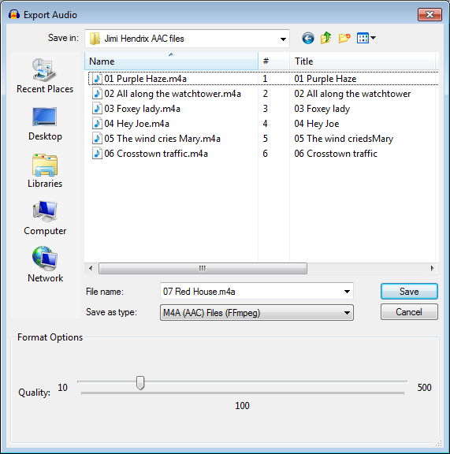

AAC Export Options
From Audacity Development Manual
AAC is a lossy, compressed audio format. It is the default audio format for Apple iTunes®, iPod® and iPhone®.
- Accessed by: then choosing M4A(AAC) Files FFmpeg from the Save as type dropdown menu
- 
- Also accessed by: then choosing M4A(AAC) Files FFmpeg from the Save as type dropdown menu. In this case the options dialog will appear in the center of the Export Multiple dialog.
| FFmpeg is not shipped with Audacity but you can download it and then export as AAC by following these instructions. |
Format Options
- Quality: Currently this slider has no effect with the version of FFmpeg recommended for Windows and Mac. The exported file is always a constant bit rate (CBR) 196 kbps (stereo) or 98 kbps (mono) file. Exporting more than two channels using Advanced Mixing Options is not currently supported.
To specify a different constant bit rate for a mono or stereo AAC file, choose Custom FFmpeg Export in the Export Audio Dialog. Then use the button to open the Custom FFmpeg Export Options dialog. See the example on that page for details.